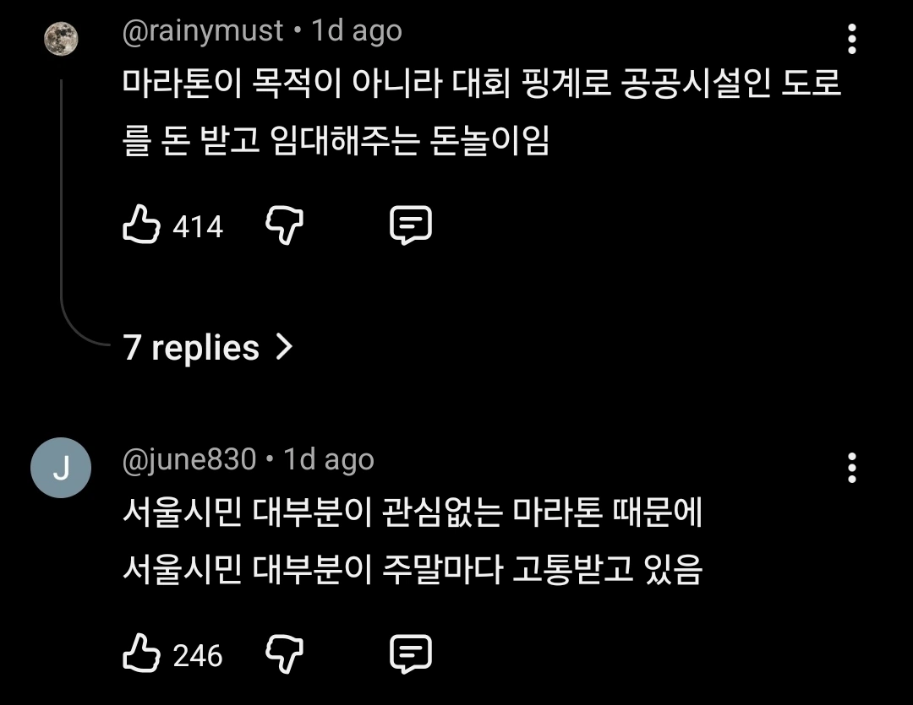
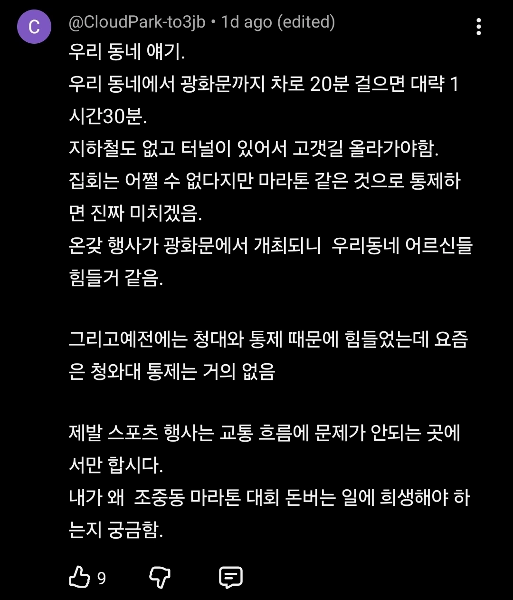

마라톤좀 그만해 ㅅㅂ


마라톤좀 그만해 ㅅㅂ
서울에서 마라톤하며 문화생활 하는 나에 취해서
남한테 피해주는지도 모르고 시발것들
지방에서 서울만큼 열어도 똑같이 불편하다고 할걸
그냥 깡촌에서 쳐하지 왜 도시에서 하겠다고 지랄이여
광화문에서 하는 마라톤은 대형언론사에서 주최하는 경우가 많음. 그런 마라톤은 경찰이나 정부도 함부로 못건드리더라.
왜 도로를 쳐 막고 하니..
1년에 1-2회도 아니고 너무 자주함. 길 다쳐막고 막은 만큼 우회도로에 차 몰려서 주말아침부터 디지게 막히게함.
그니까 마라톤 해도되는데 기존 인프라는 유지되게 해야지
마라톤이 준비하는건 좆도 없는데 참가비는 존나 받아먹는 개꿀통인거 알려지니까 온갖 호로새끼들 다 달려들어서 마라톤 대회 여는중
버러지새끼들
개최하는 협회새기들 돈 잘 벌자너~ 승인해준새기들도 꺼-억
문제는 돈벌려고 대회를 남발하는 주체와 그걸 또 허용해주는 정책이 문제라고생각.
사람 없는데 가서 하라고 뷰웅신들아
저거 씨발 버스 두시간 기다려야함. 버스가와도 자리가 꽉차서 못타 ㅅㅂ
40분가려고 두시간 기다려야해 씨발년들
사람 없는 시골가서 하라고 해도 좆도 말도 안듣지ㅋㅋ 그냥 저새끼들은 남들 피해주면서 시선 느끼는거 즐기는 변태들이라니까?
돈놀이 할라고 뻔한 대회 여는 주최쪽도 마찬가지지만 알면서도 신청하는 참가자들도 똑같음. 그냥 노출증 변태들임.
ㅈ같은 마라톤 소수 때문에 피해 보는 사람이 너무 많아 줄여라
근데 걍 마라톤 한다그러면 서울시 맘대로 길막아도되는거야?
마라톤 할거면 공기좋은 시골에서 하던가 이게 무슨 개짓거리냐 ㅋㅋㅋ
마라톤을 몇시까지 하길래?
선수들도 아니고 일반인들까지 뛰면 몇시간으로 택도 없을 듯?
딸배인데 새벽 1시즈음부터 도로 차단하드라고… 씨발 이새끼들은 한밤중부터 뛰나?
저 짝 사람 없는 외곽도로 같은 곳에서 뛰던지 개야랄 발광을 하던지 좀 해라
제발 돈 가져가라고 애원하는 애들이 넘쳐나는데 안할 이유가 ㅋㅋㅋㅋ
저거 꼭 도시에서 해야 하나 저 어디 소멸 중인 지방에서 하면 좋겠는데
허가해주는 놈들이 문제지 개최하는 놈들이야 돈이 되는데 안 할 이유가 있나 ㅋㅋㅋㅋㅋ
앞으로도 계속 개최할 거야~~~~
시골 한적한 도로 가서 하지
지방으로 가면 풀코스도 걱정없이 뛸 곳 많은데 이악물고 서울, 수도권에서만 하지 ㅋㅋ ㅋㅋ ㅋ
2025년 기준 1년에 154회를 서울 도로에서 여는게 맞나 ㅋㅋ
올해도 총 142회 예정이라는데
뉴스만 나지 바뀌는게없네 ㅋㅋㅋ 시 자체가 그냥 돈돈돈 하면 눈깔뒤집어져서 다 대주니
언제든 어떤 미친놈이 급발진해버리지 싶다. 나도 겪어보니 심히 ㅈ같더라. 어떻게든 돌아돌아 들어가긴 했다만 자주 엮이는 동네 주민은 장난 아니겠다 싶었음.
이렇게가다간 누구 열사한명 차몰고 뛰어든다
민원 엄청날텐데 저걸 주말마다 한다고?
공덕사는대 주말마다 길막는다 ㅋㅋㅋㅋㅋ
서울시내 마라톤 허가해준 기관의 장을 족쳐라
그리고 영원히 하지마
뛰라고 한강 이어진길 많잖아.. 왜 그런데서 안하고 도로에서 쳐하냐고
뛰는게 벼슬인줄 아는 새끼들이랑
그런 새끼들 지갑 노리는 사기꾼들이랑
시민 편의 돈주고 팔아먹는 병신들의 환장의 콜라보